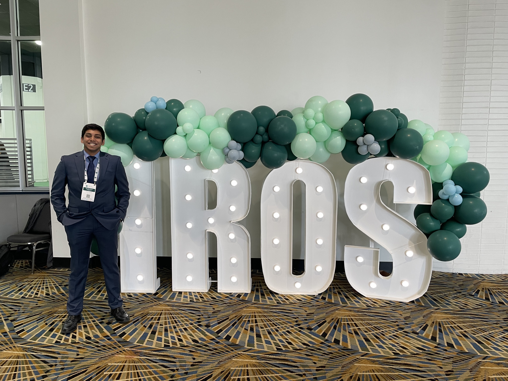

Attended IEEE-IROS 2023!
Posted on: 10/08/2023
Upon acceptance of UPPLIED (UAV Path Planning for Inspection through Learning from Demonstration), which was the paper I worked on with then PhD. students Shyam Sundar Kannan and Vishnunandan Venkatesh in Prof. Byung-Cheol Min's SMART Laboratory, I got a huge opportunity to attend IEEE-IROS 2023, held in Detroit MI. This possibly could've been the closest the conference has ever been to where I lived and I made sure to make use of the opportunity to attend the conference.
IEEE-IROS 2023 was an incredible journey filled with amazing talks, innovative research from worldwide experts, and insights from top robotics and automation companies. ...
Rough Timeline
...
Favorite Projects/Moments
...
Conclusion
...